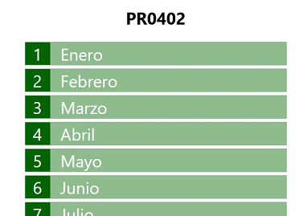

PR0402: Generación de elementos DOM con JavaScript (II)
Vamos a hacer algo más elaborado, en esta ocasión debes generar mediante JavaScript una página como la siguiente (por brevedad se ha recordato pero incluirá los 12 meses):
Igual que en la anterior práctica partes del armazón HTML:
<h1>PR0402</h1>
<div id="months"></div>
Y el código que generarás será de la forma:
<h1>PR0402</h1>
<div id="months">
<div class="month">
<div class="month-number">1</div>
<div class="month-name">Enero</div>
<div>
<!-- Igual para todos los meses -->
</div>
Para seguir con lo fácil, seguiremos utilizando la propiedad innerHTMLpara crear los elementos en esta práctica.
Puedes descargar el archivo CSS desde aquí, aunque nuevamente te recomiendo que intentes hacerlo por tu cuenta.